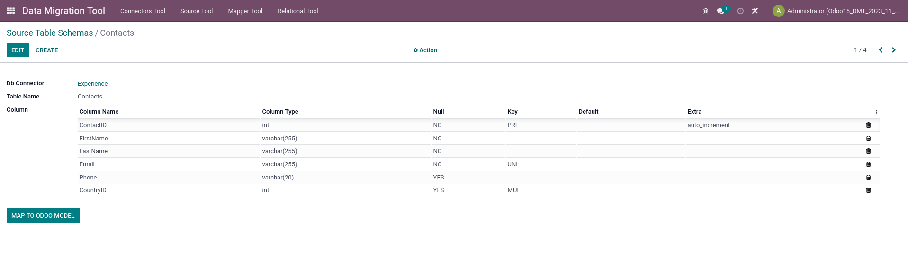
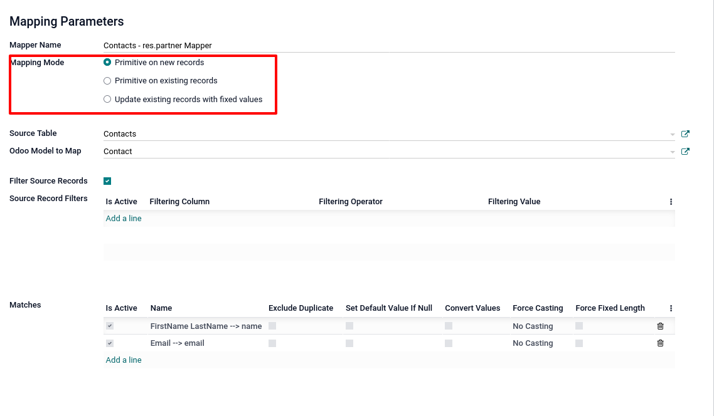
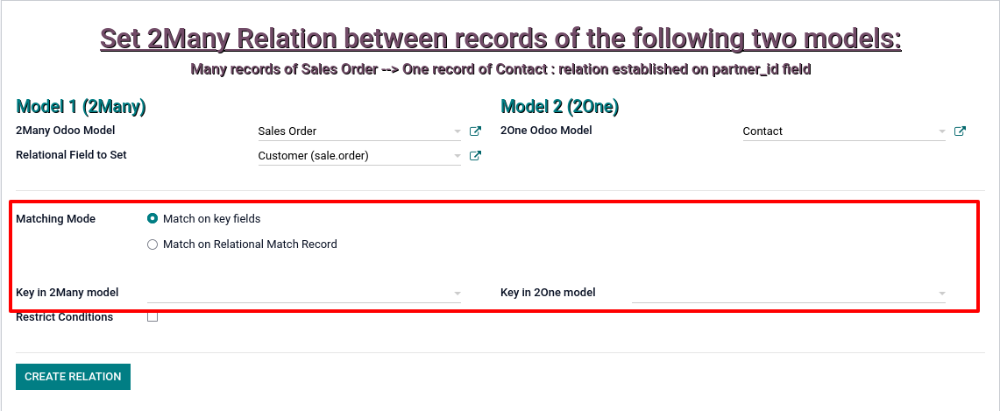

The 4 tools, from left to right on the main menu, are:
- The Connector
- The Source Table Schema object
- The Mapper
- The Relational Helper.

The creation of a Connector represents the starting point of the migration process.
A new connection record is created using the DBConnector object form.

Once all the required fields have been set, it is possible to check the validity of the connection to the source DB using the Test Connection button.

If the connection is valid, you can proceed to explore the contents of the source DB using the Show All Tables.
Using this wizard it is possible to select one or more source tables for the creation of records of the Source Table Schema.

The records of the Source Table Schema object can be created from the Wizard or thanks to the second menu of the application, individually importing the tables using the import table schema menu item.

The Source Table Schema object shows the representation of the tables to be imported.
There is a button Map to Odoo Model that allows opening a wizard to move to mapping of the source table to a particular Odoo model.

The Wizard allows you to select the Odoo model to which you want to map the source table data
The Create Mapper button will open the form of the third tool of the application:
The Table Mapper.
The Mapper Tool is used to establish the correspondence between the columns of a source table and the fields of an Odoo model and creating the selected Odoo model records.
It is the most complex tool in the application and represents the heart of the migration process.
The first parameter to set is the mapping mode.
The selection allows three values:
- Primitive on new records for creating new records
- Primitive on existing records for updating records
- Update existing records with fixed values for updating records.

The Source Table and Odoo Model to Map fields set the source table from which the data is migrated and the destination Odoo model.

If the flag Filter Source Records is active, you can apply filters to the source records.

The following setting allows you to establish the matches between the columns of the source table and the fields of the destination Odoo model.

The matchmaking form gives access to additional mapping settings:
- Filling Mode
- Source Table Column
- Odoo Model Field
- Checks, Conversions or Modifications.

The Filling Mode allows you to choose how to map one or more columns of the source table to a field of the target Odoo model.
The Source Table Column field allows you to select the columns of the source table from which the values to be migrated are imported.

The Odoo Model Field establishes the destination field to which the migrated values will be saved.
Finally, there are some options to carry out Checks/Conversions or Modifications of the imported values
As we will see in the next section, relational data such as foreign keys can be imported as primitive data to be mapped onto custom fields created via code or via Odoo Studio and then used with the Relational Helper tool to populate the relational fields.
However, there is another way to save relational data:
The Tracing Parameters section gives the possibility of saving any foreign keys on special tracer objects, without using custom fields.
Finally, the Record creation parameters section allows you to limit the number of records to import, to apply a possible offset and to choose the record creation mode:
- Intermediate: Creation via create method
- Faster: Creation via Query on the database
- Slower: Creation via Form Class.
After setting all the fields, pressing the Import Data button will start the creation or update of records in the Odoo destination model, the operation may take a variable amount of time depending on numerous factors:
- The speed of the machine used
- The connection speed
- Creation mode
- Number of fields to map
- Number of source records to migrate.
Once the import operation is completed, a wizard will show a short report of the result.

The third step performed with Table Mapper imports only raw data on numeric, string, Boolean or date Odoo fields.
If an Odoo model contains only these types of fields, the migration process for this model can be considered effectively concluded.
The 4th tool of the application is instead necessary when we need to set relational fields.
That is to establish relationships between records mapped to different Odoo models on the basis of primary and foreign keys present on the imported source tables.
The Relational Helper object allows you to choose the two models to relate and the Many2one field to set.
The Matching Mode setting allows you to select the way in which the records of the two models will be related.
The first method is match on key fields and it works on the assumption that the primary and the foreign key of the two models have been imported on custom fields.

It is possible to limit the number of records on which to perform the operation.
You can set the minimum and maximum value of the keys to compare (this option is only available in the Match on key fields mode).

Instead, by choosing the Match on Relational match record mode it is possible to establish a relationship without using the keys saved in the custom fields.
This mode is based on the tracer objects.

After setting all fields, pressing the Create report button will start the operation.
At the end a wizard will show a short report with the results.